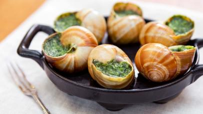

Escargot

Description
Humerous text about escargot
Ingredients
- 1/2 cup butter
- 1 pound helix snails, without shells
- 4 cloves garlic, minced
- 1/2 cup shredded Parmesan cheese
- salt and ground black pepper to taste
Directions
- Preheat the oven to 350 degrees F (175 degrees C).
- Melt butter over medium-low heat in a saucepan. Add snails, garlic, and parsley; cook and stir for 3 to 4 minutes.
- Place 1 snail along with some sauce in each cup of an escargot pan. Sprinkle tops with Parmesan cheese, salt, and pepper.
- Bake in the preheated oven until cheese is melted, bubbling, and lightly browned, about 10 minutes.
Homepage
French Fries